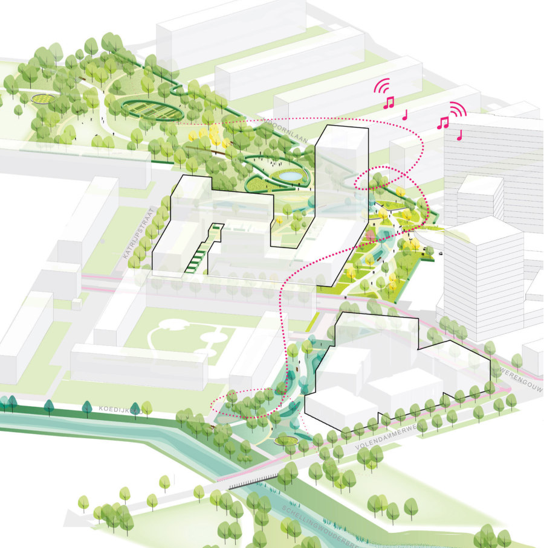
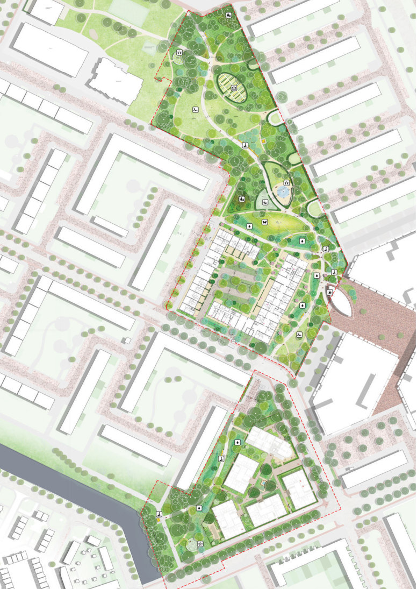
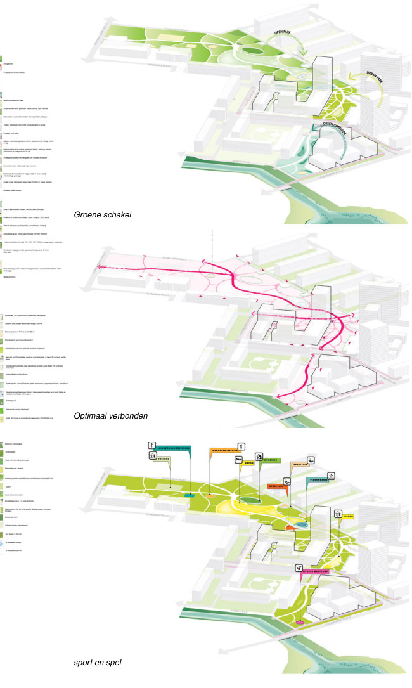
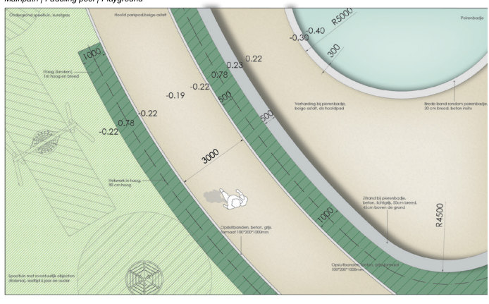
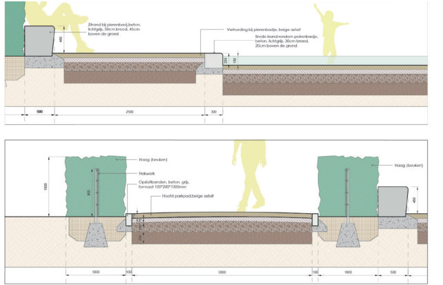
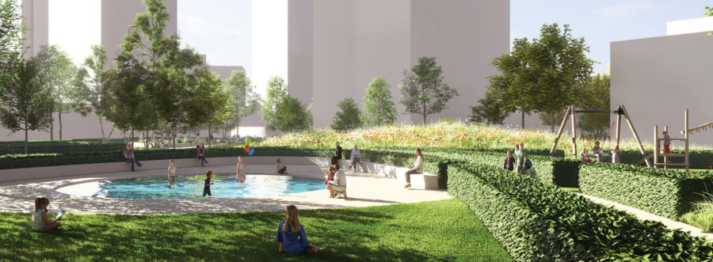
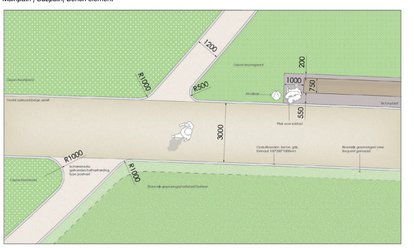
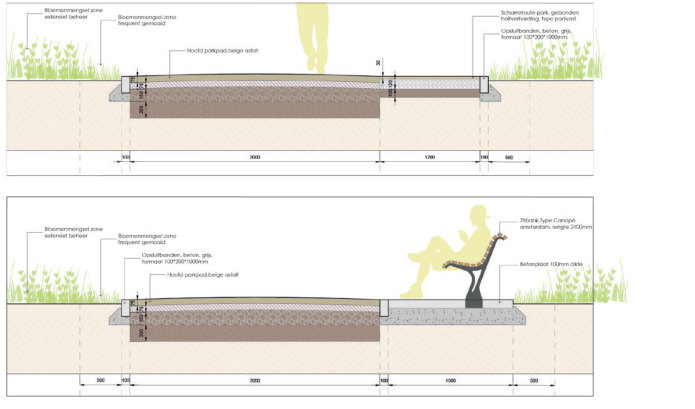
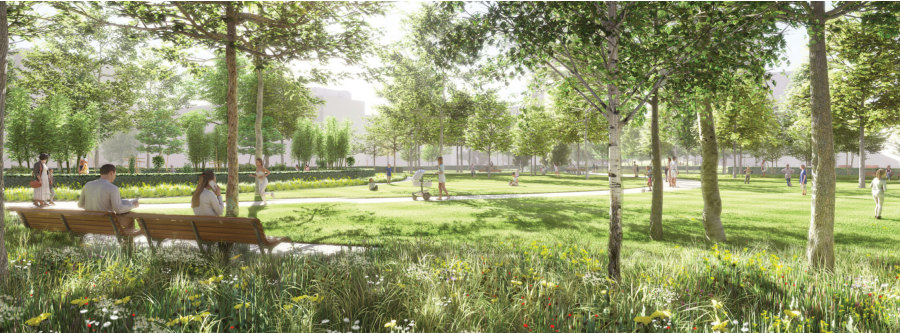

Groene zoom
- Place
- IJdoornschoollocatie, Amsterdam
- Year
- 2021
- Assignment
- Public space
- Firm
- Buro Sant en Co
- Design
- 2021
- Status
- SO / VO
- Collaborations
- Gemeente Amsterdam
- Team
- Sander Singor, Purvika Awasthi

A green zone linking Tuindorp Nieuwendam and Waterlandplein in Amsterdam-Noord, along the axis that runs from the Schellingwouderbreek out to the landscape beyond. It is designed as much for urban nature as for people, with the new housing set into the landscape rather than dropped onto it.
The task was to develop a green urban location with multiple spatial and functional purposes, as part of the urban renewal plan for the Waterlandplein neighbourhood. The area connects Tuindorp Nieuwendam and Waterlandplein, and offers the chance to create a harmonious link between them.

Its character comes from a green axis running from the Schellingwouderbreek across both neighbourhoods towards the Baanakkerspark and the landscape beyond. The development focuses on urban nature, climate adaptation and shared use, integrating new building blocks into the landscape rather than dropping them onto it.


The design also works on continuity of experience: the red brick from the Puccini handbook is pulled in from street level, through the building and across the stairs to the meeting garden, gradually transforming into a carpet of varying brick shades.





 Next projectParkstraatApeldoorn, 2022
Next projectParkstraatApeldoorn, 2022